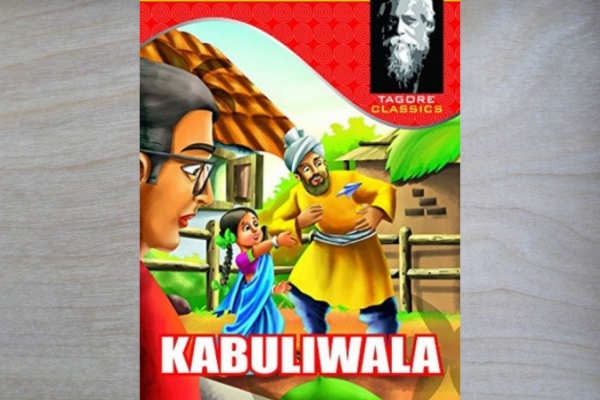
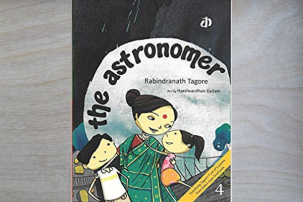
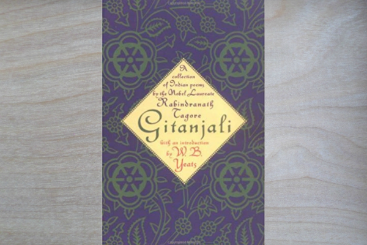
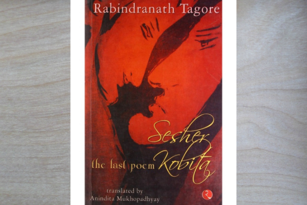

Rabindranath Tagore
1861-1941
Kabiguru
Rabindranath Tagore, Bengali Rabīndranāth Ṭhākur, (born May 7, 1861, Calcutta [now Kolkata], India—died August 7, 1941, Calcutta), Bengali poet, short-story writer, song composer, playwright, essayist, and painter who introduced new prose and verse forms and the use of colloquial language into Bengali literature, thereby freeing it from traditional models based on classical Sanskrit. He was highly influential in introducing Indian culture to the West and vice versa, and he is generally regarded as the outstanding creative artist of early 20th-century India. In 1913 he became the first non-European to receive the Nobel Prize for Literature. The son of the religious reformer Debendranath Tagore, he early began to write verses, and, after incomplete studies in England in the late 1870s, he returned to India. There he published several books of poetry in the 1880s and completed Manasi (1890), a collection that marks the maturing of his genius. It contains some of his best-known poems, including many in verse forms new to Bengali, as well as some social and political satire that was critical of his fellow Bengalis.
Biographies
-
Kabuliwallah
 This is a short story about a merchant from Pashtun who visits Calcutta every year to sell dry fruits and spices. Over his many trips, he befriends a young girl named Mini. These two formed a strong bond. Things were going just fine until an unexpected event causes turbulence in their relationship. Will it crumble under pressure – or will it become stronger than ever?
-
The Astronomer
 This is a short story about a merchant from Pashtun who visits Calcutta every year to sell dry fruits and spices. Over his many trips, he befriends a young girl named Mini. These two formed a strong bond. Things were going just fine until an unexpected event causes turbulence in their relationship. Will it crumble under pressure – or will it become stronger than ever?
-
Gitanjali (Song Offerings)
 The Nobel Prize winner, Gitanjali, is a real work of art. This compilation of 103 Bengali poems has now been translated into many languages such as English and Hindi. Each poem has a strong devotional tone and will invoke a sense of faith in the reader’s heart.
-
Shesher Kabita
 Tagore had hit a lull according to many until this book was published. It is a satirical novel which mocks all of Tagore’s haters. Amit, a young poet from Calcutta falls in love with Labanya, a girl from Shillong. They both share a love of literature.